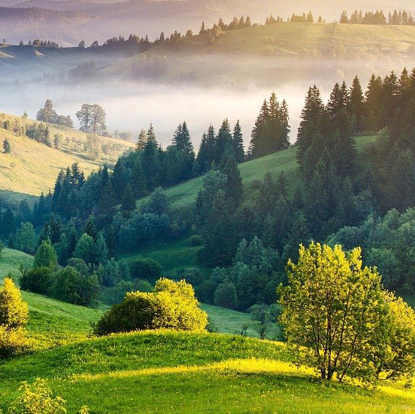
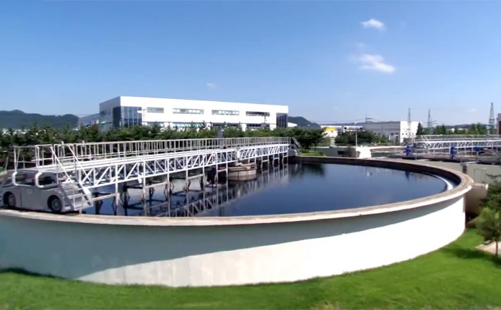
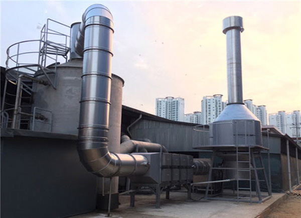
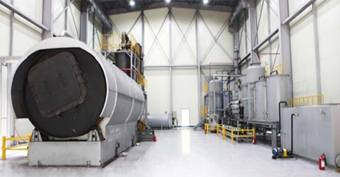
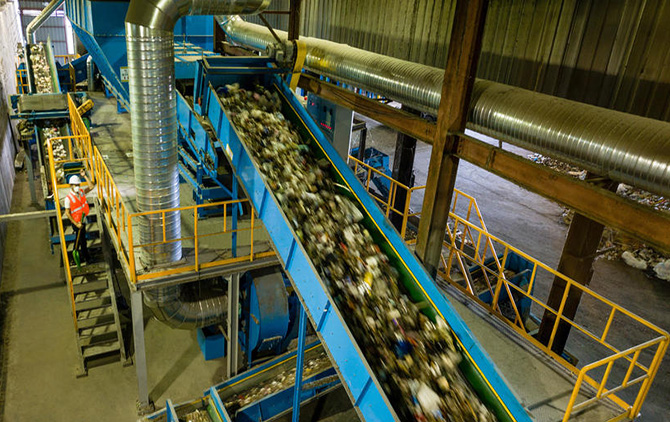

HOME > 지속가능경영 > 환경경영
환경경영

Moorim Green Management
무림은 그린경영체계를 구축, 3대 전략(기후변화대응, 친환경제품 개발 및 관리, 친환경시스템 운영)을 수행하며 정부의 저탄소 녹색성장과 함께하는 친환경기업으로 앞장 서고 있습니다. 투명한 그린경영으로 고객에게 올바른 정보를 제공하겠습니다.
친환경 시스템
- 환경오염 최소화
- 대기/수질/소음/악취/폐기물 관리 강화
- 체계 및 문화 구축
- 환경경영시스템 운영
- 그림 사회공헌 활동 추진
친환경 제품
- 친환경제품 인증 확대
- 친환경물질 관리체계 구축
- 유해물질 관리체계 구축
- 녹색구매 체계 확립
기후변화 대응
- 온실가스 내부 관리 극대화
- 온실가스/에너지 관리기반 구축
- 온실가스 감축 추진
- 온실가스 외부저감활동 추진
- 국내외 조림사업 추진
- 탄소라벨링 인증 확대
- 그린파트너십 사업 추진
환경경영 활동

- 수질관리 및 용수 재활용
- 무림페이퍼에서는 폐수 배출 전에 필터를 걸러 생산공정으로 재활용, 폐수 최종처리수를 공정용수로 재활용하고 있습니다. 무림SP에서는 3차 정화 후 Bag Filter 여과를 통해 재활용하며 용수사용 절감하고있습니다. 그리고 무림P&P 공정상 사용되는 펌프 실링수, 응축수, 건조공정의 백수 등을 재활용하여 자원 이용 극대화하는중입니다.

- 대기관리
- 무림페이퍼에서는 열병합발전소를 통한 스팀 공급으로 대기오염물질 원천방지하고 있습니다. 무림SP에서는 청정연료인 LNG를 사용해 대기환경오염 방지 최소화하고있습니다. 또한 무림P&P에서는 대기오염물질 배출을 최소화하고자 고효율 집진시설 및 최첨단 공해방지시설 설치/운영중입니다.

- 소음 및 악취 관리
- 생산공정상의 각종 FAN소음, 배기소음, 변압기소음 등을 저감시키는 활동을 지속적으로 실시하고 있으며, 악취물질에 대한 원천제거 또는 감소활동을 통해 공장주변을 쾌적한 환경으로 조성하고있습니다.

- 폐기물 관리
- 공정상 발생하는 폐수처리오니(슬러지)는 녹생토, 지렁이 먹이 등으로 재활용하고, 공법 변경 및 고효율 탈수기 도입 등을 통해 폐기물 발생을 최소화하고있습니다. 또한 유해물질로 구분되는 원료의 사용을 최소화하기 위해 대체물질 연구개발하고 있습니다.